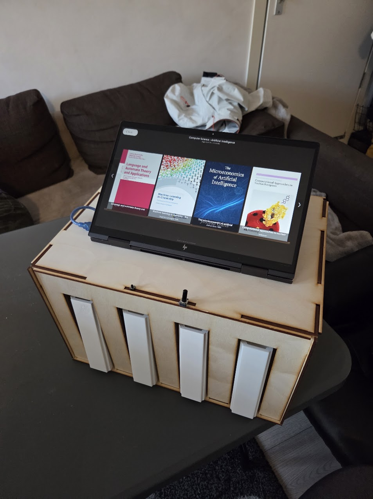

Library
This is a project where a library terminal was made for the UTwente Library. The library had a request, and a prototype for their problem was made. The project was made for the course "Human Centered Design", which is a course in the first year of Creative Technology. The goal of the course is to learn how to design for human needs and to create solutions that can improve the user experience.

Back to projects